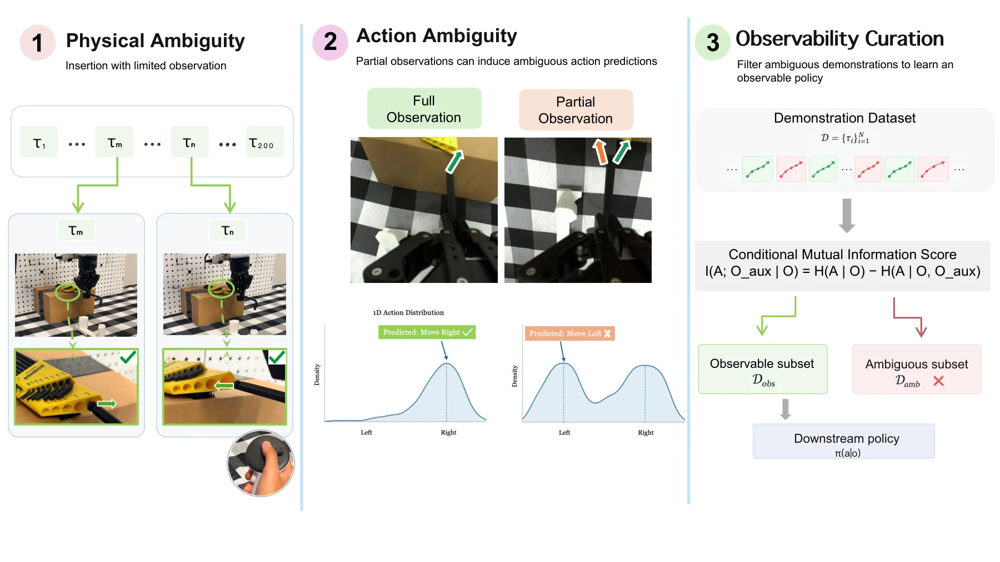
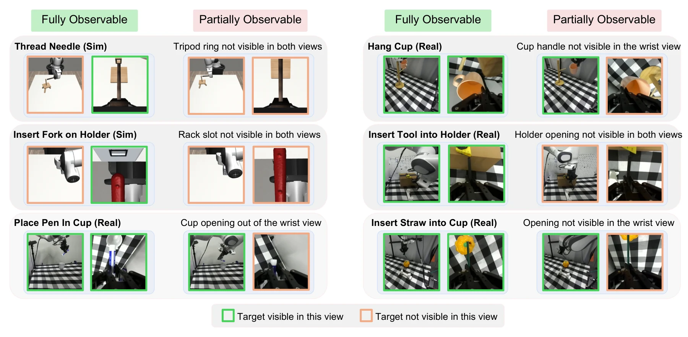
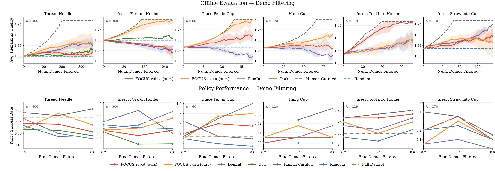
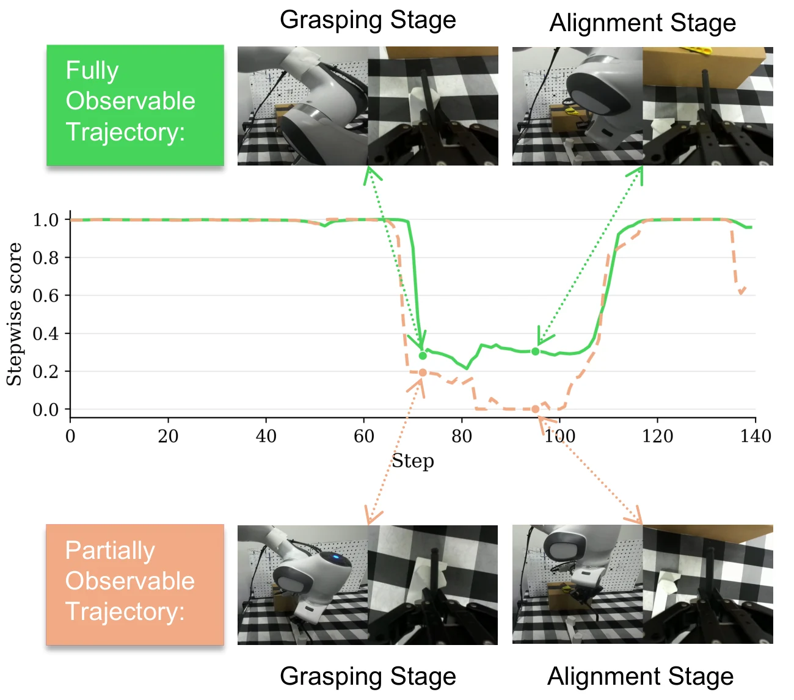
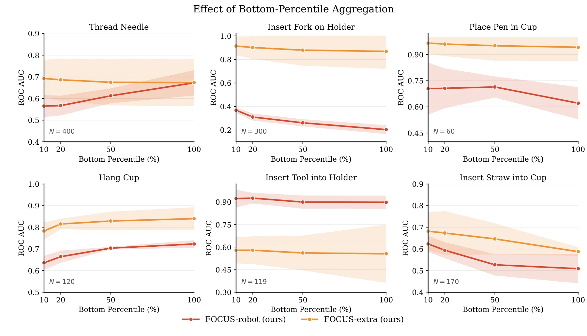

What Your Policy Cannot See
Robot Data Curation via Observability Estimation
Anonymous authors · Paper under double-blind review
A successful demonstration can still be hard to imitate when the policy's cameras miss the information needed to choose an action. FOCUS identifies and filters those demonstrations.
Explore the project ↓Can the policy see enough to act?
FOCUS scores visual observability in offline robot demonstrations. It asks whether an auxiliary view or robot state reveals action information that the policy's visual observations lack.

From missing information to a curation score
If an auxiliary observation helps predict an action after conditioning on the policy observation, the policy observation was incomplete.
Predict the action twice
Compare an action model given the policy observation with one that also receives auxiliary information.
Measure what is missing
Use conditional mutual information to quantify action information provided only by the auxiliary signal. Higher FOCUS scores mean better observability.
Keep visible demonstrations
Aggregate transition scores within each trajectory, rank demonstrations, and train policies on a selected subset.
Six manipulation tasks, varied visibility
We evaluate on two simulated and four real-robot tasks. Human labels of fully and partially observable demonstrations evaluate the learned scores; they are not used to train FOCUS.

Better policies with selected data
The best FOCUS configurations improve closed-loop success by 5–45 percentage points over training on all demonstrations. The gain depends on task and curation setting.
Place Pen in Cup · FOCUS-extra
80% successUsing 40% of demonstrations; 35% with the full dataset and 15% with a matched random subset.
Fit Tool into Holder · FOCUS-robot
85% successUsing 40% of demonstrations; 60% with the full dataset and 65% with a matched random subset.

Filtering is not uniformly beneficial: removing demonstrations can also reduce the coverage and diversity needed for a task.
Where observability matters
Trajectory scoring emphasizes the least observable moments, where critical visual information is most likely to be missing.


Abstract
Robot imitation learning performance depends critically on the quality of demonstration data. Even successful demonstrations may omit action-relevant visual information, an aspect of data quality that remains less explored in robot data curation. We introduce FOCUS, an information-theoretic framework for quantifying visual observability in offline robot demonstrations, defined as the extent to which visual observations contain the action-relevant information needed to determine an appropriate action. Our key idea is to test whether an auxiliary observation provides information about the demonstration action beyond what is contained in the visual observation. We instantiate this idea using conditional mutual information between the auxiliary observation and actions given visual observations. We use the resulting observability scores to rank demonstrations, filter those with low visual observability, and train imitation learning policies on the retained data. Empirically, our scores generally rank demonstrations in agreement with human observability judgments across two simulated and four real-robot manipulation tasks. The best-performing FOCUS configurations improve success rates by 5–45 percentage points over training on the full dataset.